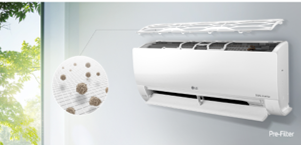

		<div class="row text-center text-lg-left ventanas" style="background-color: #fff; ">
			<div class="col-lg-12 pt-lg-6 pt-4 px-lg-5">
				<div></div>
				<div class="mt-4 mb-3"><h2 class="titulov">PREFILTROS</h2></div>
				
			</div>
			<div class="col-lg-6 pl-lg-5 pr-lg-3 pb-lg-6 pb-5">
				<div class="texto">Atrapa grandes partículas de polvo como primera línea de defensa</div>
				
			</div>
			<div class="col-lg-6 px-lg-5">
				<div class="text-center pb-3"></div>
			</div>
			
		</div>